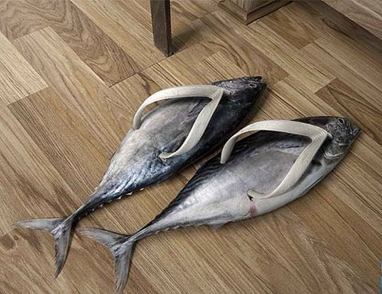

Peek-a-boo
Peek-a-boo is an ancient game riddled in mystery and deceit. Though it appears to be an innocent children's pastime, you may change your mind when you learn of its treacherous history.
Let's play peek-a-boo. Click here to see the surprise!
What a cute walrus! Click here to hide her again.

Another Peek-a-boo
It wasn't until the Upper Paleolithic period that footwear was consistently worn by populations. The earliest shoe prototypes were soft, made from wraparound leather, and resembled either sandals or moccasins. Jump ahead a few thousand years to the beginning of modern footwear.
Let's do another peek-a-boo. Click here to see another surprise!
What a funky-looking shoe! Click here to hide it again.
